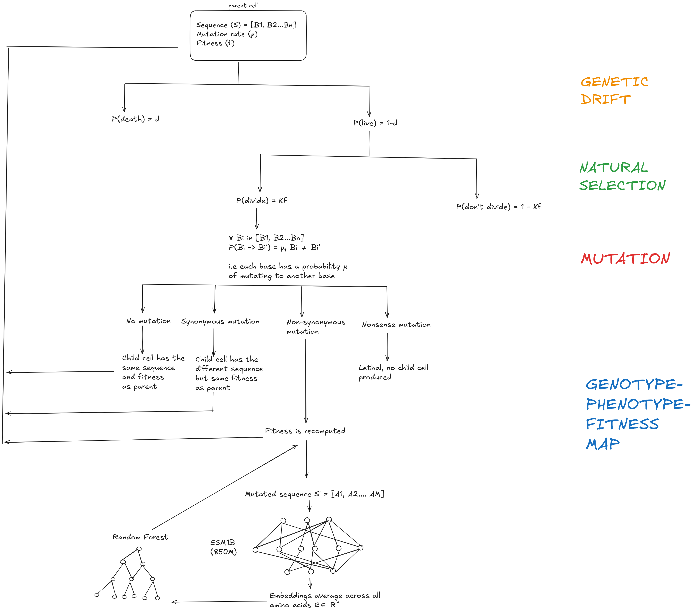

Methods
picocell's workflow is outlined in the following schematic:

Set up
Picocell is set up as a series of decision trees that are applied to each cell at each generation. Each cell is implemented as Python object with the following attributes:
class cell:
""" A class that represents a cell """
def __init__(self, id=0, dna_sequence="",aa_sequence="",fitness=0.0,mutation_rate=0.0, generation=0, death=0):
self.id = id # each cell has an integer ID number to keep track of it
self.dna_sequence = dna_sequence # a string that represents the DNA sequence
self.aa_sequence = aa_sequence # a string that represents the DNA sequence
self.fitness = fitness # float that represents the fitness of the cell, based on its sequence
self.mutation_rate = mutation_rate # a float that is the per-base per-generation mutation rate
self.generation = generation # an int indicating the generation in which the cell is born
self.death = death # an int indicating the generation in which the cell dies
Each cell has the DNA sequence corresponding to the coding sequence of a Cas12f protein from Acidibacillus sulfuroxidans i.e. the whole genome is a single ORF. In addition to these cellular attributes, there are two variables associated with each simulation: the level of genetic drift \(d\) and the presence/absence of natural selection.
Genetic Drift
The genetic drift level \(d\) represents the probability that a cell is killed in that generation. This probability is constant across the generations, and is independent of the sequence or the fitness of the cell.
Natural Selection
Each cell has a sequence, and each sequence has a corresponding 'fitness'. In the context of the Cas12f protein, this is the genome editing efficiency, normalized by the activity of the wildtype sequence. The fitness of the wildtype sequence is 1, and mutants with greater editing efficiency than the wildtype have a fitness of >1 while those with lower editing efficiency have a fitness value <1.
In order to use the fitness to inform the growth of the cells, each cell has a probability of dividing that is equal to their fitness \(f\) scaled by a factor \(\kappa\).
Mutation
Once a cell 'decides' to divide, the opportunity for mutations to occur arises. Each cell has a mutation rate \(\mu\) which is defined as the per base per generation probability of generating a mutation. Formally,
Each base has an equal chance to mutating to any other base, i.e. there is no mutational bias.
Genotype-Phenotype-Fitness Mapping
After a cell divides, there are four possible outcomes for the child cell:
- No mutation: The child cell has the same sequence and fitness as the parental cell
- Synonymous mutation: The child cell has a different DNA sequence, but the same fitness as the parental cell (assuming that all synonmymous mutations are silent)
- Nonsense mutation: As a rule, if a premature stop codon is introduced, then this is considered a lethal mutation and the child cell is killed.
- Nonsynonymous mutation: The DNA and amino acid sequence has changed, and the fitness must be recomputed for this mutation.
If the nonsynonymous mutation is present in the DMS dataset for the Cas12f protein, then the fitness value is fetched from the table. Otherwise, the embeddings are extracted for the new sequence using ESM-1b, and the embeddings are fed to a random forest regressor to map to a fitness value. For more information about how this regressor was trained, please see the code page. For the ORF of length \(M\) amino acids, ESM generates an embedding matrix \(E \in \mathbb{R}^{M \times D}\) where \(D\) is the dimensionality of the embedding space. The embeddings are averaged across all amino acids to generate a vector representation \(e \in \mathbb{R}^{D}\) for the protein. Training the regressor on the DMS dataset with a random 80:20 train:test split yielded an \(R^2\) ~ \(0.35\). Cross-validation to tune the hyperparameters (in this case the number of the trees in the forest) may have yielded better results. For the purposes of the project, the default value of 100 trees was used.
After recomputing the fitness, the newly born children cells join their parents to become parent cells for the next generation and the simulation continues for the specified number of generation.